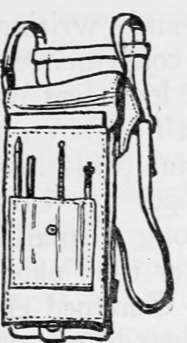
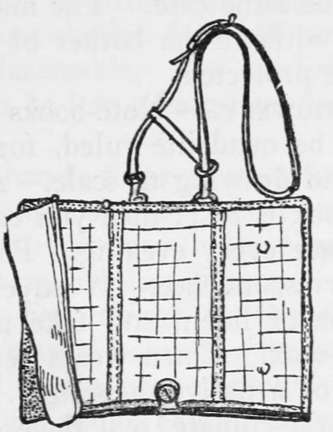

Personal Kits. Part 3
Description
This section is from the book "Camping And Woodcraft", by Horace Kephart. Also available from Amazon: Camping and Woodcraft.
Personal Kits. Part 3
These maps vary in merit. For some of the wilder and rougher regions they are only reconuoissance maps and full of minor inaccuracies; but they are revised from time to time. A good part of the continental United States has already been surveyed.
Maps may be cut in sections and mounted on muslin in such way that they fold conveniently for the pocket, but there should be a cover to protect them from soiling and wet.
A better way is to use what the French call a liseur de cartes. There are many models and sizes, but all are alike in principle. The simplest form is a leather pocket to contain map sections, faced with transparent celluloid, ruled in squares, for the particular section in use at the time. Then there is no need of mounting the map on cloth (such a backing is likely to loosen in the humid air of the forest, and the edges will fray), nor is there risk of the map being soiled, torn, injured by rain, or blown away.
Fig. 106. Map Case.
Fig. 107. U. S. A. Dispatch Case.
If one has much mapping, sketching, or writing to do, he may well carry a military dispatch case, of which one pattern is shown in Fig. 106, made of olive drab web. with celluloid windows divided into I-inch squares, pockets for stationery, pencils, dividers, etc., and fitted with a military compass, or not, as one desires. The regulation U. S. Army dispatch case is of leather (Fig. 107).
For ordinary purposes a pocket case is more convenient. The London tackle makers, C. Farlow & Co., sell, at 5s. 6d. postpaid, a leather " fly and cast case," 5 x 4 1/2 inches, with six transparent pockets of celluloid. A topographical sheet by the U. S. Geological Survey cuts into twelve sections that fit these pockets, two in each, back to back. Number the sections to show how they join. Small sheets of quadrille ruled paper for notes and route sketching go in the same case. The maps can readily be consulted without the bother of unfolding in a wind, and are protected.
Stationery
Note-books and writing paper should be quadrille ruled, for convenience in mapping and drawing to scale. A loose-leaf memorandum book is best: then you can file your notes in a safe place every evening. Postal cards may suffice for correspondence. If envelopes are carried, let them be of linen, and take along a small stick of sealing-wax. Linen wears better than paper in the pocket of a native messenger. Gummed envelopes, in a moist climate, seal themselves before you want to use them. Sealing-wax thwarts the inquisitive rural postmaster and his family. On the route out from camp your mail may go through many hands: a bon entendeur salut! Carry stamps in books, not sheets.
A self-filling fountain pen, and a bottle of ink with screw top held tight by a spring, an indelible pencil for marking specimens or packages for shipment, and several large rubber bands, may be needed, according to circumstances.
Take along an almanac to regulate the watch, show the moon's changes (tides, if near the coast), and, by them, to determine the day of the month and week, which one is very apt to forget when he is away from civilization. Have a time-table of the railroad that you expect to return by.
Matchbox
Do not omit a waterproof matchbox, of such pattern as has a cover that cannot drop off. I prefer a flat one. It can be opened with one hand. The matches in this box are to be used only in emergency. Carry the daily supply loose where you can get at them. For this purpose I like a pigskin pocket with snap-button, worn on the belt. The matches I waterproof, before starting, by dipping them half-length in shellac varnish thinned with alcohol to the right consistency, which is found by experiment, and laying them out separately on a newspaper to dry. This is better than using paraffine or collodion, because shellac does not wear off, and it is itself inflammable, like sealing-wax. Matches so treated can be left a long time in water without spoiling.
A bit of candle is a handy thing to start fire with wet wood, besides its other obvious use in an emergency. Sick-room candles are less bulky than common ones, burn brighter, and last longer.
Flashlight
To find things in the tent at night, or to find one's way if belated, a pocket electric flasher is so useful that a camper should always carry one. Get one with round edges that will not wear holes in the pocket. The kind shaped like a fountain pen is all right in some cases, but not on hunting or fishing trips: the less bright metal you expose, the better.
Eye Glasses
If you wear them, carry a spare pair; the woods are hard on such things.
The glare of the sun on water, or snow, or in deserts, is often very trying. The best sun glasses are what are called shooting glasses, of amber color, w7hich excludes the ultra-violet rays. They are large enough to protect the eyes against wind, dust, and flying insects. They come handy when one is pursued for an hour by a swarm of " red pepper " gnats that are bent on suicide and on blinding some body in doing it.
First Aid Kits
There are many kinds of pocket medicine cases, and of first aid boxes fitted with both medical and surgical supplies. Most of them are too large and heavy to be carried constantly on the person when a man is afield: they will be left in camp — and camp is not the place where accidents are most likely to occur.
It is quite important that the little store of first aid appliances that one does keep always at hand should be contained in a case that is air-tight and aseptic, yet easy to open and close. I have not seen a ready fitted emergency case that is so, except the soldier's first aid packet, which is hermetically sealed in either tin or impermeable cloth. This package contains a triangular bandage, one or two compresses of sublimated gauze, two safety pins, and instructions.
Continue to: